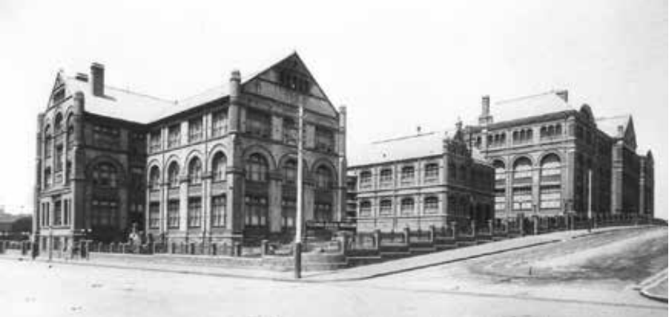

WELCOME
The #Ultimote history website provides histories of people, places and events in the City of Sydney local government area of Ultimo.

Early history
A selection of highlights representing the early history and development of the Ultimo area.
Pyrmont in 1880
A map of Johnstones Bay in the Pyrmont area c.1880
Technical College and Museum, 1894
Photograph courtesy of the Mitchell Library, State Library of NSW. The original Sydney Technical College opened in 1892, The University of Technology and the University of NSW began as units of the Technical college.
View of Pyrmont from Town Hall tower
View overlooks the original Pyrmont bridge, Fife's iron foundry, the ASN shipyards, and St. Bartholomew's c.1870
John Harris
A surgeon and public servant (c1790-1805), John Harris was responsible for much of the development of the Pyrmont-Ultimo area.
Ultimo House c. 1905
Ultimo House was built in 1804 by convicts for John Harris, who was responsible for many landholdings in the Ultimo area, and before being demolished in November 1932, was thought to be Sydney's oldest standing house.
Photo of the Ultimo skyline in 1961
Photo by By Carter, Jeff. Contributed by National Library of Australia [nla.pic-vn3104092]